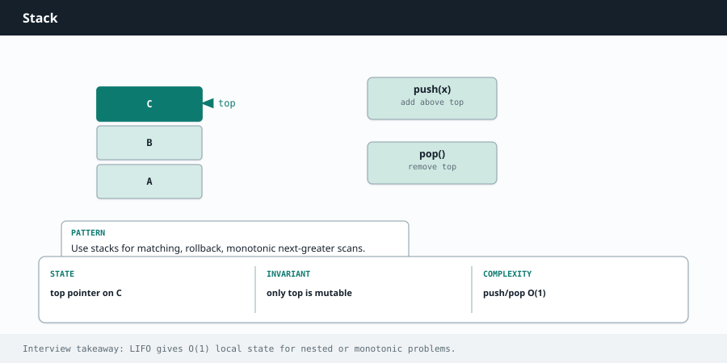

Competitive Programming
Chapter 06
Stack

A stack is a pile. You add to the top and you remove from the top, so the last thing you put in is the first thing you take out. That "last in, first out" rule turns out to be exactly what you need for matching brackets, undo history, and figuring out the "next bigger thing" in an array. push / pop { top only the top is reachable [ ( bottom Push adds on top, pop removes from top. You never touch the middle.
R E A C H F O R A S T A C K W H E N Y O U S E E
Matching or balancing brackets. "Evaluate this expression." "Undo the last action." Anything where you process items and sometimes need to cancel or pair with the most recent one.
And a special kind called a monotonic stack for "next greater element" or "next smaller element" style problems.
Worked example: valid parentheses
Given a string of brackets, decide if they are correctly matched and nested. Every time you see an opening bracket, push it. Every time you see a closing bracket, the top of the stack must be its matching opener. If it is, pop it off. If not, or if the stack is empty when you need it, the string is invalid. At the end the stack must be empty.
def is_valid(s):
pairs = {')': '(', ']': '[', '}': '{'}
stack = []
for c in s:
if c in pairs: # a closing bracket
if not stack or stack[-1] != pairs[c]:
return False # nothing to match, or wrong
match
stack.pop()
else: # an opening bracket
stack.append(c)
return not stack # valid only if nothing is left
boolean isValid(String s) {
Map<Character, Character> pairs = Map.of(')', '(', ']', '[', '}', '{');
Deque<Character> stack = new ArrayDeque<>();
for (char c : s.toCharArray()) {
if (pairs.containsKey(c)) { // closing bracket
if (stack.isEmpty() || stack.pop() != pairs.get(c)) return false;
} else {
stack.push(c); // opening bracket
}
}
return stack.isEmpty(); // must be empty
}
U S E T H E R I G H T S T A C K T Y P E I N J A V A
Do not use the old java.util.Stack class; it is slower and synchronized. Use ArrayDeque instead, with push , pop , and peek . In Python, a plain list is already a perfect stack: append to push and pop() to pop.
The monotonic stack: next greater element
This is the stack trick that feels like magic. For each element, you want the next element to its right that is bigger than it. Brute force is O(n²). With a stack that stays in decreasing order, you get O(n).
The idea: walk left to right, keeping a stack of indices whose answer you have not found yet. When the current number is bigger than the value at the top of the stack, it is the answer for that top element, so pop it and record it. Keep popping while the current number is bigger. Then push the current index.
def next_greater(nums):
result = [-1] * len(nums) # default: no greater element
stack = [] # indices waiting for their answer
for i, x in enumerate(nums):
while stack and nums[stack[-1]] < x:
result[stack.pop()] = x # x is the next greater for that index
stack.append(i)
return result
int[] nextGreater(int[] nums) {
int n = nums.length;
int[] result = new int[n];
Arrays.fill(result, -1); // default: none
Deque<Integer> stack = new ArrayDeque<>(); // indices waiting
for (int i = 0; i < n; i++) {
while (!stack.isEmpty() && nums[stack.peek()] < nums[i]) {
result[stack.pop()] = nums[i];
}
stack.push(i);
}
return result;
}
Each index is pushed once and popped at most once, so even though there is a loop inside a loop, the total work is O(n). That is the payoff of the monotonic stack: it looks quadratic but it is linear.
W A T C H O U T
Decide up front whether your stack holds values or indices. For "next greater" you almost always want indices, so you can write the answer back into the correct slot. Storing values loses the position and forces you to redo work.
Deeper Intuition
Why the monotonic stack is O(n)
A monotonic stack keeps its contents in order, here strictly decreasing. When a new element arrives that is bigger than the top, it pops every smaller element, and each pop is the exact moment that popped element has found its next greater value. Because every index is pushed once and popped at most once, the whole scan is linear even though it feels like it looks backward for each element. a monotonic stack finds each next greater element in one pass next greater 2 1 2 4 3 2 1 2 4 3 Each element waits on the stack until a bigger one arrives, which is the moment its answer is found.
Another worked example: Daily Temperatures
For each day, how many days until a warmer one. Keep a stack of day indices whose temperatures are decreasing. When today is warmer than the day on top, pop it and record the gap, since today is that day's answer. Whatever never gets popped simply has no warmer day ahead.
def daily_temperatures(temps):
answer = [0] * len(temps)
stack = [] # indices, temperatures decreasing
for i, t in enumerate(temps):
while stack and temps[stack[-1]] < t:
j = stack.pop() # today is warmer than day j
answer[j] = i - j # how long day j waited
stack.append(i)
return answer
int[] dailyTemperatures(int[] temps) {
int[] answer = new int[temps.length];
Deque<Integer> stack = new ArrayDeque<>(); // decreasing temps
for (int i = 0; i < temps.length; i++) {
while (!stack.isEmpty() && temps[stack.peek()] < temps[i]) {
int j = stack.pop();
answer[j] = i - j;
}
stack.push(i);
}
return answer;
}
Going Deeper
What kinds of problems this solves
U S E T H I S P A T T E R N F O R
Anything with nesting or matching, anything that needs the most recent unfinished thing first, and the whole family of next greater or next smaller questions solved with a monotonic stack.
| Problem type | Classic examples |
|---|---|
| Matching and nesting | Valid Parentheses, Minimum Remove to Make Valid, Simplify Path, Basic Calculator |
| Monotonic stack | Next Greater Element, Daily Temperatures, Largest Rectangle in Histogram, Trapping Rain Water, Online Stock Span |
| Stack as history or undo | Backspace String Compare, Decode String, Asteroid Collision, Remove All Adjacent Duplicates |
The algorithm, in a bit more detail
A stack gives you last in first out access, which is exactly what nesting needs. Every open bracket waits on the stack until its matching close arrives. If a close does not match the top, the string is invalid. This same "wait until resolved" idea powers path simplification and expression evaluation.
A monotonic stack keeps its contents sorted, either always increasing or always decreasing. When a new element would break that order, you pop everything it beats, and each pop is the moment you have found that popped element's answer, like its next greater value or the boundary of a rectangle.
Every element is pushed once and popped once, so the whole scan is O(n) even though it feels like it is looking backward.
Variations you will run into
The two big variants are the plain stack for matching and history, and the monotonic stack for range and next greater problems. In monotonic problems you often store indices rather than values, so you can compute distances and widths when you pop.
Edge cases and gotchas
Always check the stack is not empty before you peek or pop.
For monotonic problems, decide up front whether you want increasing or decreasing order, and whether you push indices or values.
In Java prefer Deque over the legacy Stack class, since Stack is synchronized and slower.
Remember to handle whatever is left on the stack after the loop, since leftovers often mean unmatched items.
S T E P B Y S T E P
Valid parentheses on the string '([])'. Each opener is pushed and waits, and each closer must match the top of the stack.
| char | action | stack after |
|---|---|---|
| ( | push | ( |
| [ | push | ( [ |
| ] | top is [ , match, pop | ( |
| ) | top is ( , match, pop | empty |
| end | stack empty, so valid | empty |